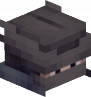

Drastically reduced duration of the ability, since the prototype version felt way too punishing.
Added a text indication wherever player is cursed by Arcane Mute.
It was unclear whenever player has the curse. ü§∑‚Äç‚ôÄÔ∏è
Dragon Scale (Strength Ultimate)
Decreased strength lvl 7 >> 4.
The one shot was fun and all, but level 7 strength was +240% damage increase! It's +100% now, if you're interested.
Alchemist
Brewing Pot
Increased brewing speed by 50%.
Brewing speed felt too slow, considering the Alchemist is basically useless. New brewing speed should be around ~33s.
Added brewing animation.
Finally!
Added a brief cooldown for interacting with Brewing Pot.
Players sometimes could've bug the stick, both having it as a weapon and in a cauldron.
Potion
Reduces Strength lvl 4 >> 3.
Strength is just too powerful...
Reduced intoxication gain 15 >> 10 per potion.
Since the strength level is reduced, intoxication gain reduce felt right.
Changed Strength scaling, see System Updates below.

Archer
Shock Dart
Increased max damage 9 >> 15.
Reduced distance damage.
This will punish players who decided to stay inside the range while being more forgiving to players closer to the edge.
Renamed weapon "Harbinger" >> "Bow of Destiny".
Not to be confusing with the Harbinger! And also it's his lore weapon's name, I kinda forgor üíÄ
Reduced weapon damage 8 >> 5 due to changed in projectile calculations.
Harbinger
Melee Stance
Increased weapon damage 7.5 >> 8.
Increased ultimate damage 33.3 >> 40.
Increasing melee damage will force players to utilize Melee Stance more, instead of spamming with a bow.
Range Stance
Reduced bow damage 5.0 >> 2.0.
This isn't a big decrease as it seams, since the projectile calculations change. But it is significant.
Tidal Wave
Added tidal wave talent.
Summon a giant wave that pushes enemies away from you and applies Riptide to them.
Riptide
Received a rework:
Is now a status effect. (Ticking down)
Is not removed upon executing, instead starts 2.5s cooldown.
Charge shots can now trigger the effect as well as melee.
Ultimate applies significantly more Riptide than charged shots.
Increased riptide hits 3 >> 5.
These changes should allow players to utilize this mechanic more.
JuJu the Bandit
Ultimate Change
Reworked ultimate:
During the ultimate, you can shoot instantly, and shot arrows will be considered as Elusive Arrows.
Increased ultimate duration 6s >> 10s.
Increased cost 50 >> 65
Reduced weapon damage 8 >> 4 due to changed in projectile calculations.
Vortex
Sword of Thousands Stars
Base damage 10 >> 6.5.
Vortex felt too powerful in close combat. The damage decrease in exchanged for Star Align damage increase shouldn't change his power level.
Increase vortex damage 0 >> 1/tick.
Had to introduce damage again since the old damaging method doesn't work anymore. But also this ability should feel more powerful given it had long cooldown.
Now starts with cooldown equal to 50% of normal cooldown.
Star Align
Astral slash damage increased 5 >> 20.
As main way of damaging, Astrals Stars felt more like a movement ability rather than damaging.
Weapon
Astral slash damage increased 5 >> 20.
As main way of damaging, Astrals Stars felt more like a movement ability rather than damaging.
Dark Mage
Weapon
Renamed "Wand" >> "Ancient Wand".
Lore.
Ability Cast
Dark Mage now uses RIGHT and LEFT click combination to cast spells.
The old way of casting spells felt more unique and fitting for Dark Mage.
Shadow Clone
Added swimming state.
If player summons clone while swimming, it will no longer just stand in water.
Ender
Added a teleport from below a block check to prevent players from going out of bounds.
Teleporting is fun until you softlock yourself.
Nightmare
Paranoia
Increased paranoia affect time 3s -> 5s.
It is a nerf because old Paranoia was applying incorrectly, blinding players for up to 30s!!!
Nightmare
Added a fail-safe to return trident if it has been gone for more than 15 seconds.
Moonwalker
Moonslite Pillar
Added a little animation.
Moonteorite (Ultimate)
Adjusted radius calculations.
Reduced weapon damage 8 >> 4.5 due to changed in projectile calculations.
Shadow Assassin
Dark Cover
Added penalty for taking damage of 3s.
Increased penalty for taking damage while in Dark Cover 3s >> 10s.
Dark Cover is core ability for Shadow Assassin, but when he hides for the whole match is where fun disappears.
Added an indicator when player is in Dark Cover.
Added UI component of Dark Cover cooldown in actionbar.
Leaving Dark Cover while Shrouded Step is traveling will end ability and create a clone at it's current location. The clone explode after a short delay or upon hit damaging nearby opponents.
Swooper
Blink
Added blink ability.
Teleport forward a short distance, passing through any non-solid blocks in the way. Cannot teleport through walls.
Dr Ed
Block Harvest
Added Block Harvest ability.
Quickly gather resources from nearby blocks, then combine them in one big pile before throwing it at your enemies. Ability damage is based on the amount of blocks gathered.
Block Maelstrom (Passive)
Added Block Maelstrom passive ability.
Creates a block that orbits around you, dealing damage based on the element upon contact with opponents. Refreshes every 10.
Element Changes
Renamed elements:
Stone -> Heavy
Wood -> Sturdy
Wool -> Soft
It was confusing, when you pick up a quartz block and see that you're carrying stone üòè.
Replaced chat message with a block sound.
Improved element calculations.
Shark
Submerge
Reduced cooldown 10s >> 5s.
Whirlpool
Added Whirlpool ability.
Create a whirlpool at your current location that pulls nearby enemies towards center.
Oceanborn/Sturdy Claws (Passive)
Reduced walking speed while in walker 0.6 -> 0.4.
Increased critical damage 5 -> 15.
Troll
Repulsor
Is now range restricted.
As it should have been, description literally says that.
Last Laugh (Passive)
Added Last Laugh passive.
Your hits have 0.1% chance to instantly kill enemy!
Vampire
He's back!
Dracula Jr.
Call upon the lord of bats to aid you in battle, summoning a bat that will periodically attack nearby opponents.
Useful to passively generate blood.
Swarm
Launch a swarm of bats at your enemies, rapidly dealing damage and blinding them for a short duration.
Fast and easy way to deal damage.
Sanguineous Morphology (Ultimate)
Transform into a bat and fly freely for certain duration.
After duration ends, transform back into vampire and gain the opposite amount of blood you had upon casting (Eg: 10 -> 0, 7 -> 3, 2 -> 8) and summon Dracula Jr.
You cannot deal damage nor gain blood during the duration!
Blood Thirst (Passive)
Your health is constantly drained.
Whenever you hit an opponent you will gain a stack of blood, up to 10 stacks.
Drink the blood to increase your damage and heal yourself. Healing, damage boost, duration and cooldown is based on the amount of stacks consumed.
Vampire must sustain it's health to stay in a fight!
Techie
Lockdown (Ultimate)
Reduced health 200 -> 100.
Now respects teammates.
Cyber Cage
Now has a short windup before becoming active.
Pytaria
Flower Escape
Added animation.
Feel the Breeze (Ultimate)
Increased damage 10 -> 30.
Now respects teammates.
Spark
Blinding Fire
Now only blinds whoever is looking at it.
Taker
NEW!
Fatal Reap
Instantly charge opponents' bones with a powerful scythe swipe and unleash a devastating attack that shatters their bones, dealing 20% of their current health as damage.
Convert some broken bones directly into Spiritual Bones.
Hook of Death
Instantly consume Spiritual Bone to launch a chain that travels in straight line up to certain amount of blocks or until opponent is hit. After, retracts back to you.
If opponent is hit, they will be retracted with chains, take 10 of their current health as damage will be slowed and withered for short duration.; Additionally, the cooldown is reduced by 50%.
Spiritual Bones
You may posses up to certain amount of Spiritual Bones that orbit around you. With each bone you will:
Deal more damage.
Take less damage.
Heal for percentage of the damage dealt.
Some abilities might cost bones to use.
Embodiment of Death (Ultimate)
Instantly consume all Spiritual Bones and cloak yourself in darkness.
While cloaked, gain resistance and heal rapidly but suffer speed reduction; Additionally, shoot death projectiles periodically.
Healing and amount of death projectiles is based on the amount of bones consumed.
Tamer
Mimicry (Ultimate)
Added Mimicry ultimate.
Instantly mimic your current pack to gain it's blessings!
MineOBall
Changes minions.
Bounty Hunter
NEW!
Shorty
Shoot you double barrel to deal damage that falls off with distance.
If hit enemy is close enough, they will bleed and will be vulnerable for short duration.
This ability can be shot twice consecutively before reloading.
Grappling Hook
Launch a grappling hook that travels up to certain amount of blocks.
Whenever it hits a block or an entity, it will pull you towards it.
Multiple charges; Cooldown starts after all charges are used.
Smoke Bomb (Passive)
Whenever your health falls below 50%, you gain a Smoke Bomb.
Throw it to create a smoke field that blinds everyone inside it and grant you a speed boost.
Changed to use Darkness effect instead of Blindness.
Decoy sounds are now played more frequently.
Map Changes
Dragon's Gorge
Cold Meter now decreases faster if player is standing near a light source. blockLight>=2
Cold Meter now properly resets upon death.
Boosters are working again! üòÆ
Mid Journey
Added Mid Journey map.
Mid Journey is a fierce and treacherous arena located deep within the Nether. Its jagged walls and pillars of obsidian provide cover and obstacles for players to use to their advantage as they battle for supremacy in this dangerous realm.
System Updates
Database
Now using MongoDb instead of yml files, host must connect to a MongoDb to use the plugin.
Might allow local config file if host is not connected to the database later.
Cosmetics
Added cosmetics. Players may spend coins to buy cosmetics and use them in battle.
There are 5 types of cosmetics as of yet:
Kill cosmetics: Executes whenever you eliminate an opponent.
Death cosmetics: Executes whenever you die.
Contrails: Trails behind you whenever you move.
Win: Displays when you win a game.
Prefix: Displayed between your selected hero and you name. Example: "Archer [PREFIX] hapyl"
You can manage cosmetics in the Cosmetics menu.
Experience System
Players are able to ear Experience by eliminating opponents, winning games or by simply surviving.
Levelling up unlocks heroes, grants cosmetics and perks that may aid you in battle.
You can access Experience menu from the Cosmetics menu.
Strength Changes
Changed formula from +30% >> +20% of damage per strength level.
This change will try to balance all strength wielders.
Ranged damage is now affected by strength.
I actually think it was, but it wasn't. Magic I guess.
Parkour
Parkour is back! Jump your way into the best players.
Projectile Damage Changes
Projectile damage is now actually takes weapon damage value in calculations.
Due to this change, all projectile characters see damage decrease.
Deathmatch Changes
Added ability to re-join deathmatch after leaving the server.
Added a draw state, if multiple players from different teams have the same amount of kills.
Interface
Reworked win screen and title.
Optimized scoreboard
Added teammate information in TAB list.
Added draw for Deathmath.
Players can longer see other's ultimate charge unless in a team.
Changed SlotPattern in map selection GUI from DEFAULT >> FANCY.
Updated GUI for Hero selections.
Lobby Items
Added lobby items to change hero, map etc.
Teams
Lobby players are now stored by UUID instead of Player object.
Renamed "Light Purple" team to "Pink".
Statistics
Every hero statistic is now tracked: kills, deaths, wins, ability usage etc.
Other Changes
Levers are now interactable.
Added ability to toggle notifications.
Hero Icon Changes
All heroes icons are now player-heads, instead of items.
NPCs
Added NPCs.
Title Animation
Added NPCs.
Input Talents
Added Input Talents.
Input talents required either LEFT or RIGHT click to execute after equipping them.
Both LEFT and RIGHT clicks generate different effects and act like different talents.
Map Changes
Dragon's Gorge
Fixed a bug with Charged Talents, where cooldown countdown was global instead of per-player.
Fixed Dark Mage's Shadow Clone blinding the Mage instead of players around it.
Fixed a bug, where Nightmare's passive ability didn't working properly.
Fixed a bug, where Nightmare's Paranoia would not apply the effect properly.
Fixed a bug, where players would see invisibility entities upon rendering.
Fixed a bug, where JuJu's ultimate required a target block to execute.
Fixed a bug, where Effect particles were displaying for players affected by the effect.
Fixed a bug, where Ninja would fly to the moon upon being hit.
Fixed a bug, where Alchemist could spam interaction with Cauldron, resulting in duping the weapon.
Fixed a bug, where Librarian's Grimoire would throw an IndexOutOfBound exception at max level.
Fixed a bug, where Climb ability would not boost player.
Fixed a bug, where stopping the game while players are still hidden will make them invisible in the lobby.
Fixed a bug, where talent's ultimate points regeneration would show for Passive and Ultimate talents.
Fixed a critical bug, where player wasn't removed from a team upon leaving, breaking the game.
Fixed a bug, where invisible players were able to deal damage. (Needs testing)
Fixed a bug, where death from fall damage would not count as death.
Fixed a type in heroes role descriptions.
Fixed a bug preventing players to remove lobby items from their inventory.
Fixed a bug, where there was an extra empty line of code in GameTask class.
Fixed a bug, where Giant Sword cosmetics would have collision.
Fixed a bug, where if player leaves Kills Deathmatch, they cannot rejoin.
Fixed a bug, where high level Weakness affects client and ignore custom calculations.
Fixed a bug, where Dr. Ed's shield would throw StackOverflow error.
Fixed a bug, where BOOM BOW did not set damager.
Fixed a bug, where physical actions would activate Dark Mage's staff.
Fixed a bug, where Mage's souls would not reset upon death.
Fixed a bug, where Spark's ultimate would not reborn.
Fixed a bug, where Spark's could not die.
Fixed a bug, where Library Void teleports would not reset upon death.
Fixed a bug, where Tamer's minions could damage each other and Tamer.
Fixed a bug, where painting could be broken.
Fixed a bug, where talent would execute even if player has not item. (Librarian)
Fixed a bug, where typing '%' in chat would break it.
Fixed a bug, where entity calculations would count entities without AI as valid.